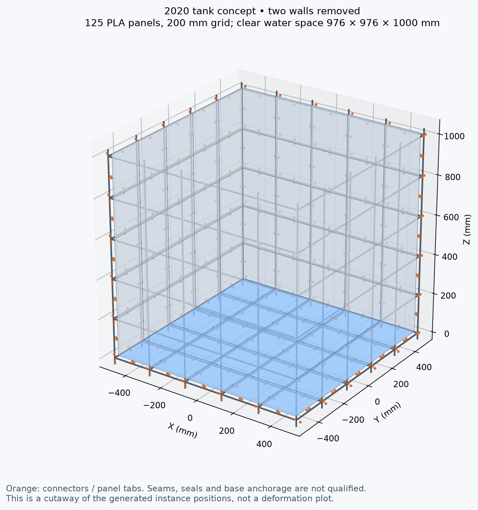
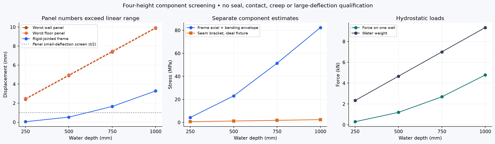

Experimental component FEA • 26 October 2026A 2020-framed tank with thinner PLA panels
200 mm grid, 125 panels, 2.0 mm PLA. Approximately 1.02 m frame width/depth and 1.06 m post height; 976 × 976 × 1000 mm water space. Open top, sealed rigid-panel concept.
The requested thin-panel design is not established as a usable water tank. With rail bearing included, every tested depth exceeds the panel small-deflection screen. The panel values below are linear diagnostics, not trustworthy final deflections or failure stresses. Nonlinear panel/contact analysis and a defined sealing/joint system are needed before a fill recommendation.

Four water depths
The water load uses ρgh, integrated over the wetted height; wall force grows with the square of the depth. Bottom pressure at 1 m is 9.81 kPa; one wall carries 4.79 kN and the water weighs 9.34 kN.
* Panel bending relative to assumed fixed supports; do not add these to the separate frame result as a coupled prediction. † Rigid joints, assumed torsional stiffness, original base-grid nodes fixed. Axial + bending stress envelope, not yield qualification. ‡ Loaded-face average in the ideal clamped-back seam-bracket fixture; connector compliance is not fed into the frame model.

Stress diagnostics
* Linear plate bending stress; peaks near restraint transitions are mesh-dependent, and large-deflection effects are missing. P95 is area-weighted and is also not a strength criterion. § Gross 5 mm shank, single-shear calculation using the tab force only. This is not fastener FEA. M3 pull-through, M5 prying/preload, T-nut pull-out and frame-joint bolt demands have not been qualified.
What was modeled
- Native CoScad geometry reuses panel holes, seam brackets, T-nut previews, slotted 2020 rail geometry, flat connectors and inside-corner connectors. Boundary panels are trimmed/extended to close the approximately 1 m enclosure; they are not all identical stock squares.
- Panel analysis: thin-plate Morley FEA, 2 mm isotropic PLA, E=2300 MPa, ν=0.35. Four finite tabs plus bilateral normal-restraint lines at rail inner faces. These lines idealize contact and can carry tension; separation must be checked in a contact model. Holes/fillets and nonlinear membrane/contact behaviour are omitted. Separate bracket-only and ideal edge cases are retained in the JSON.
- Frame analysis: 3D beam FEA, E=69000 MPa, section A=233.7 mm² and I=8430.5 mm⁴ from the modeled slotted rail, not a solid square. Actual purchased profile/alloy and torsion constant are unknown. Full-height torsion sensitivity gave about 3.06–3.32 mm.
- Existing PETG seam bracket: actual native STL, Gmsh tetrahedra, quadratic solid FEA, E=2000 MPa. One-newton flange load scaled to each case. The fully clamped back face is optimistic compared with an actual bolted/friction joint.
- Seals at every tile seam, corner and screw hole are required but unspecified. Rounded edges leave gaps to bridge; no seal stiffness or leak resistance is credited. Foundation, anchorage, long-term PLA creep, print anisotropy and water aging are not analyzed.
Checks and reproducibility
Hydrostatic force/moment and solver residual checks pass. The simply supported plate agrees with the independent Navier series to within 0.3%; beam cantilever and point-load force/moment checks pass. Named panel displacement refinements pass 5%, as does the frame mesh; bracket displacement changes 0.47% between 2 and 1.5 mm meshes. Numerical convergence does not cure the missing large-deflection physics.
The full assembly parses. Focused native checks of a panel bay, frame corner and floor/wall corner have zero overlaps. The full 3,729-instance assembly, schematic threads and purchased hardware fits have not undergone a complete contact/interference qualification.
Run instructions and assumptions · Results CSV · Full CoScad assembly · CoScad cutaway · Numerical evidence
Sources
NASA hydrostatic pressure; Prusament PLA reference modulus (not a calibration of this spool/print); scikit-fem Kirchhoff plate formulation.